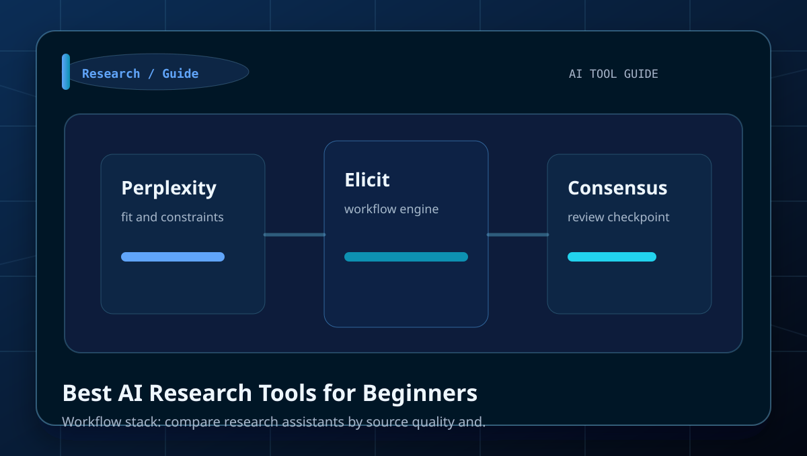
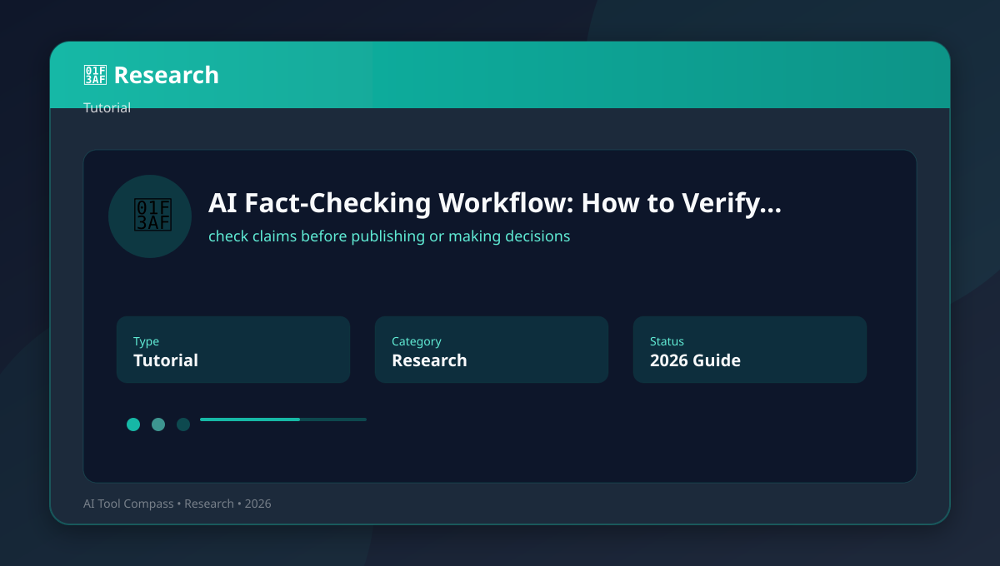
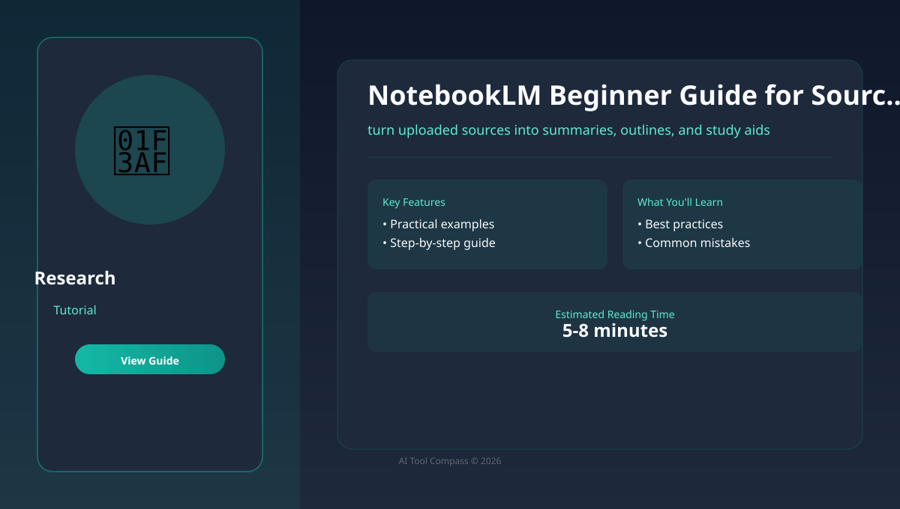
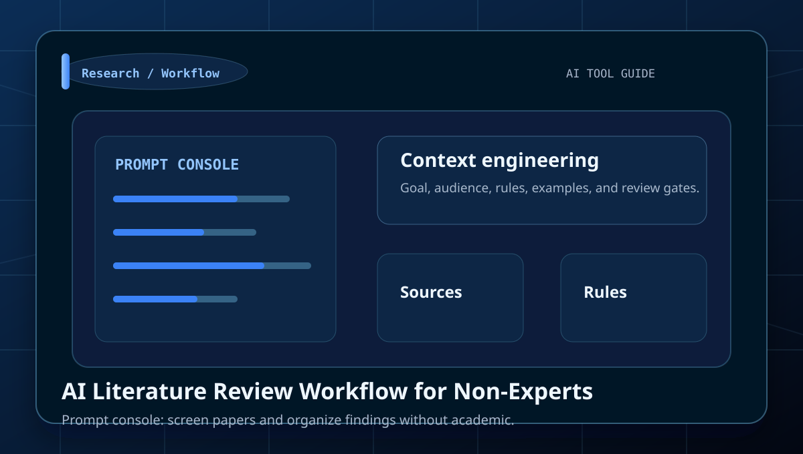
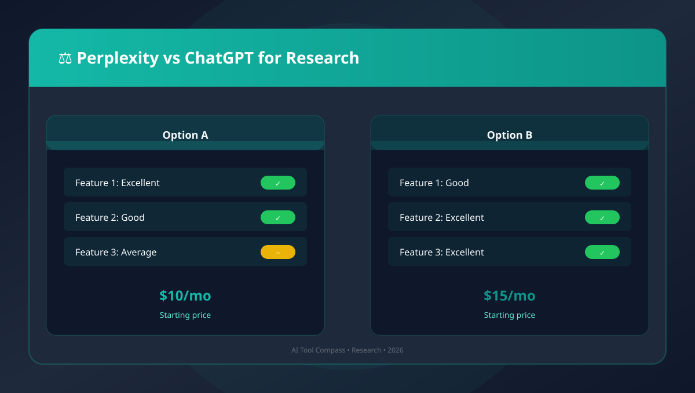
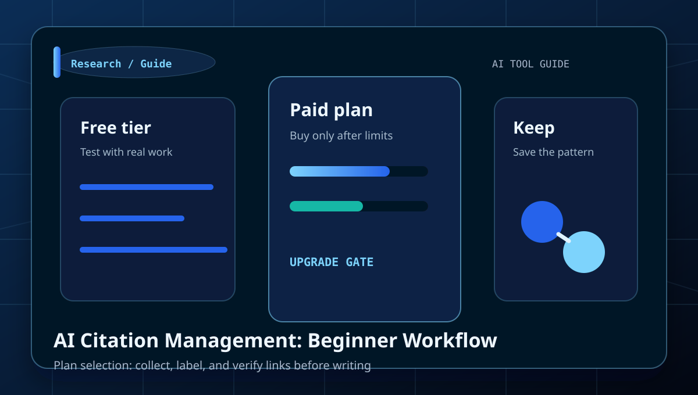
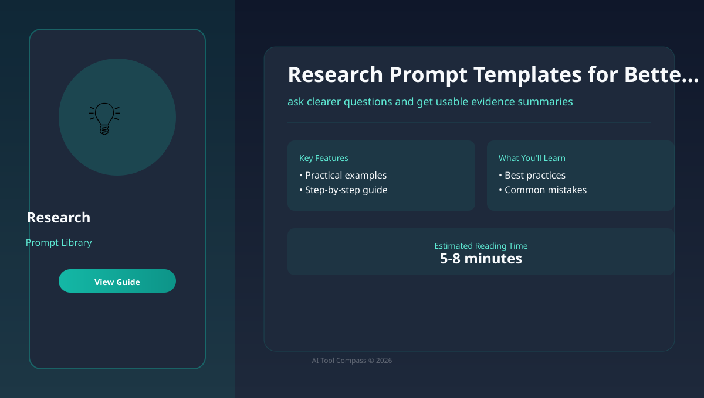
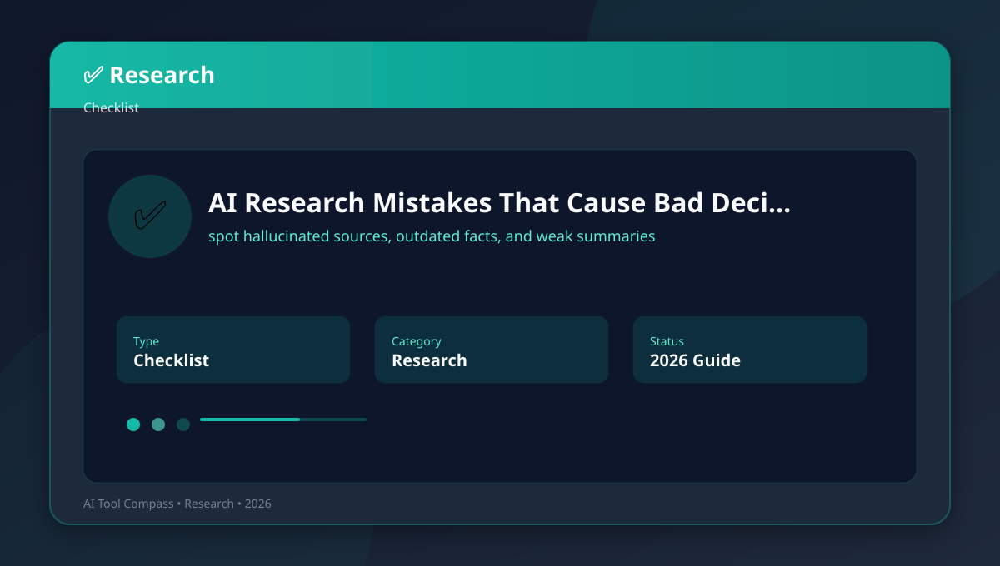
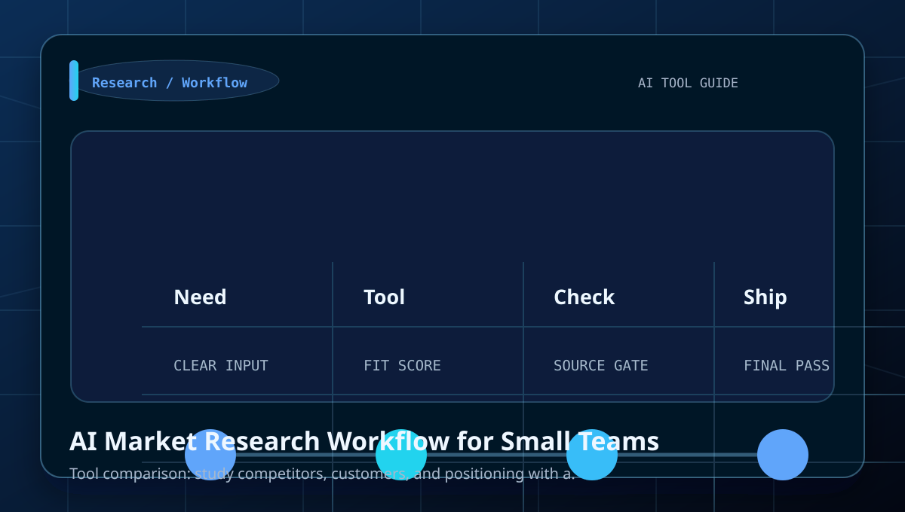

Category
AI Research Guides
Tutorials, comparisons, prompt examples, and beginner workflows for source discovery, fact-checking, literature scans, and research briefs.
Best for
source discovery, fact-checking, literature scans, and research briefs.
Perplexity, Elicit, Consensus, NotebookLM
Use the comparison tables to decide which tool fits each job.
Library
All AI Research articles
Perplexity AI Research Workflow: Beginner Guide
Learn how to move from a question to a source-backed brief with a clear workflow, examples, and beginner mistakes to avoid.

Best AI Research Tools for Beginners
Learn how to compare research assistants by source quality and workflow fit with a clear workflow, examples, and beginner mistakes to.

AI Fact-Checking Workflow: How to Verify Answers
Learn how to check claims before publishing or making decisions with a clear workflow, examples, and beginner mistakes to avoid.

NotebookLM Beginner Guide for Source-Based Notes
Learn how to turn uploaded sources into summaries, outlines, and study aids with a clear workflow, examples, and beginner mistakes to.

AI Literature Review Workflow for Non-Experts
Learn how to screen papers and organize findings without academic jargon with a clear workflow, examples, and beginner mistakes to avoid.

Perplexity vs ChatGPT for Research
Learn how to know when sources matter more than open-ended reasoning with a clear workflow, examples, and beginner mistakes to avoid.

AI Citation Management: Beginner Workflow
Learn how to collect, label, and verify links before writing with a clear workflow, examples, and beginner mistakes to avoid.

Research Prompt Templates for Better AI Answers
Learn how to ask clearer questions and get usable evidence summaries with a clear workflow, examples, and beginner mistakes to avoid.

AI Research Mistakes That Cause Bad Decisions
Learn how to spot hallucinated sources, outdated facts, and weak summaries with a clear workflow, examples, and beginner mistakes to.

AI Market Research Workflow for Small Teams
Learn how to study competitors, customers, and positioning with a repeatable process with a clear workflow, examples, and beginner.